Entraîne-toi.
Suis-toi.
Progresse.
ImberGym est ton carnet d’entraînement pour la salle, la maison et le plein air : programmes, exercices animés, records et statistiques, plus des sorties GPS avec Trackshow, la nutrition et les compléments. Sans compte, sans cloud : tes données restent sur ton téléphone.
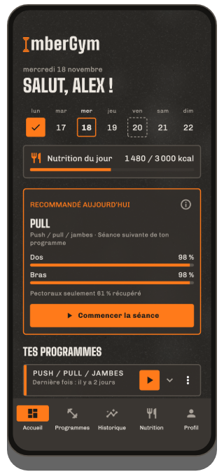
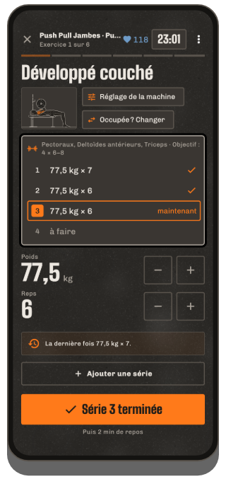
Tout pour t’entraîner.
Au même endroit.
De la première série à la randonnée en montagne – ImberGym note, calcule et te montre comment progresser.
Un exercice.
Un objectif.
Valeurs de la dernière fois préremplies, suggestion de progression, minuteur de repos même sur l’écran verrouillé.
La caméra
compte avec toi
Pompes, squats, gainage – détectés sur l’appareil, aucune image ne quitte ton téléphone.
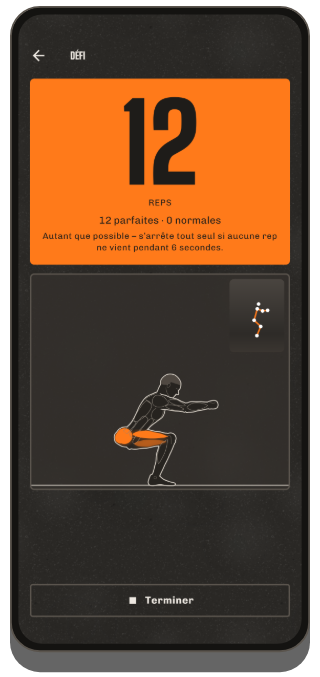
Records juste après la série
Intervalles avec annonces vocales – aussi sur la montre
Trackshow
Ta sortie GPS en survol au-dessus des courbes de niveau – avec des temps forts à partager.
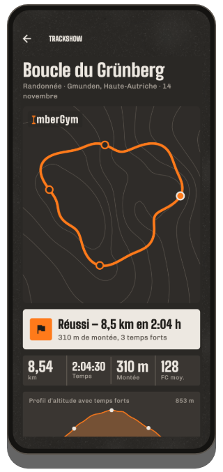
Carte musculaire
et récupération
Vois quels muscles tu as travaillés – et lesquels sont de nouveau prêts.
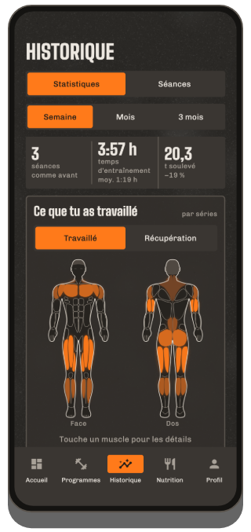
Ce que fait ImberGym
Tout ce qu’il faut pour t’entraîner – sans compte, sans cloud.
Entraînement
Progrès
Corps et nutrition
Et plus
ImberGym en images
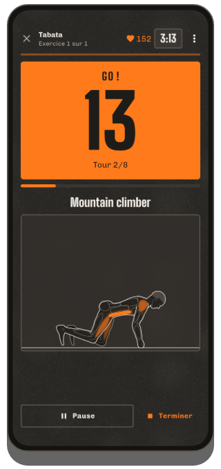
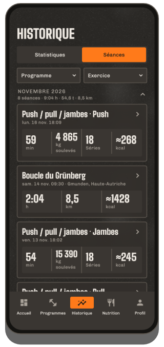
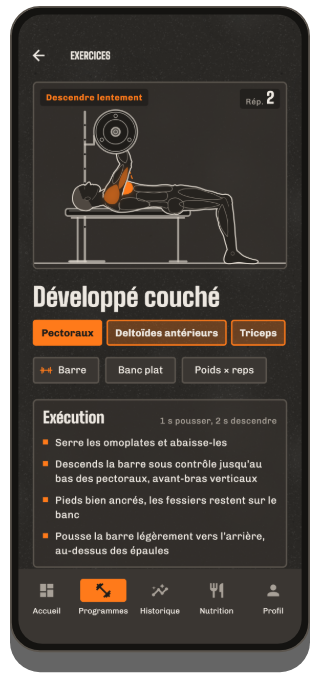
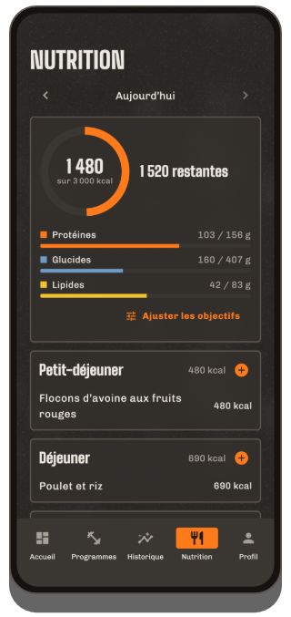
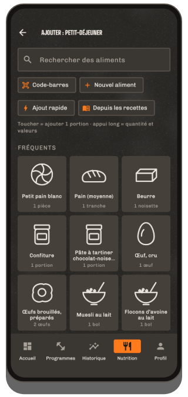
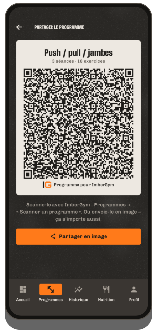
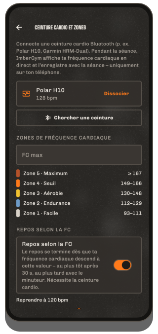
En plein air
Tes données.
Ton téléphone.
Installe et c’est parti – sans inscription.
Tout est stocké en local, sauvegarde sous forme de fichier.
Ni traceurs ni outils d’analyse.
Gratuit et Premium
Gratuit
- Séances complètes avec minuteur de repos
- Jusqu’à 5 programmes et 5 exercices personnels, tous les modèles
- Base d’exercices avec animations
- Historique, records, statistiques, bilan de la semaine et de l’année
- Fréquence cardiaque de la montre via Health Connect, ceinture cardio en direct avec zones et repos selon le pouls
- Compléments avec rappels, défi avec compteur de répétitions par caméra
- Suivi des calories avec catalogue d’aliments et code-barres, poids
- Transmettre des programmes par QR code, partager des séances en carte
Premium
- Programmes et exercices personnels illimités, importer des programmes par QR code
- Carte du corps, récupération, évolution de la masse grasse et du poids
- Fractionné (Tabata et plus)
- Plein air avec GPS, Trackshow en vidéo
- Appli pour la montre (Wear OS)
- Salles, cartes de membre, photos de progression
- Toutes les recettes, objectif de calories dynamique
Mensuel, annuel ou paiement unique à vie via Google Play – le prix actuel s’affiche dans l’appli. Essai gratuit de 7 jours après ta première séance.
Disponible sur Google PlayQuestions fréquentes
Encore une question ? Écris-moi – je réponds personnellement.
Envoyer un e-mailAi-je besoin d’un compte ?
Non. ImberGym fonctionne sans inscription et sans serveur propre.
Où sont stockées mes données ?
Uniquement sur ton téléphone. Pas de cloud, pas de publicité, pas d’analyse. Plus de détails dans la politique de confidentialité.
L’appli fonctionne-t-elle hors ligne ?
Oui. Seules deux choses utilisent Internet : la recherche d’un code-barres inconnu sur Open Food Facts et le nom du lieu d’une sortie GPS (le point de départ est alors envoyé au service de localisation d’Android). Tout le reste fonctionne hors ligne.
Comment la fréquence cardiaque de ma montre arrive-t-elle dans ImberGym ?
Via Health Connect, le stockage des données de santé d’Android. Dans l’appli de ta montre, active Health Connect et autorise « Fréquence cardiaque » : c’est possible entre autres avec Samsung Health, Garmin Connect, Fitbit, Polar Flow, Withings et Zepp (Amazfit). Touche ensuite « Charger la FC de la montre » dans les détails de la séance dans ImberGym. Huawei : Huawei Health n’écrit pas dans Health Connect ; l’appli « Health Sync » (Play Store) peut transférer les données : source Huawei Health, destination Health Connect, sélectionne « Fréquence cardiaque ». Astuce : lance aussi une séance sur la montre pour qu’elle mesure en continu.
Quelles ceintures cardio fonctionnent ?
Toute ceinture cardio Bluetooth avec le profil standard de fréquence cardiaque, p. ex. Polar H9/H10, Garmin HRM-Dual ou Wahoo TICKR. Associe-la une fois dans le profil, sous « Ceinture cardio et zones » : elle se connecte ensuite toute seule à chaque séance.
Comment partager un programme ?
Dans l’éditeur du programme, touche l’icône QR et montre le code ou envoie-le en image. L’autre personne le scanne dans l’onglet « Programmes » avec « Scanner un programme », aussi depuis une image. Tout le programme est dans le code, rien n’est envoyé en ligne.
Nouveau téléphone : que deviennent mes données ?
Dans le profil, sous « Données et sauvegarde », crée une sauvegarde et enregistre-la p. ex. sur Google Drive. Sur le nouveau téléphone, choisis « Nouveau téléphone ? Restaurer une sauvegarde » sur le premier écran.
Je viens de Strong ou Hevy : puis-je récupérer mes séances ?
Oui. Importe l’export CSV de ton ancienne appli sous « Données et sauvegarde » → « Importer des séances ». ImberGym associe les exercices et affiche d’abord un aperçu.
Mes photos de progression sont-elles envoyées en ligne ?
Non. Elles sont stockées dans un dossier privé de l’appli, n’apparaissent pas dans la galerie et sont même exclues des sauvegardes Android.
Puis-je masquer la nutrition ?
Oui. Toute la section se désactive dans le profil : ImberGym reste alors un pur carnet d’entraînement.
Comment supprimer mes données ?
Les entrées une par une directement dans l’appli ; tout d’un coup en désinstallant l’appli.